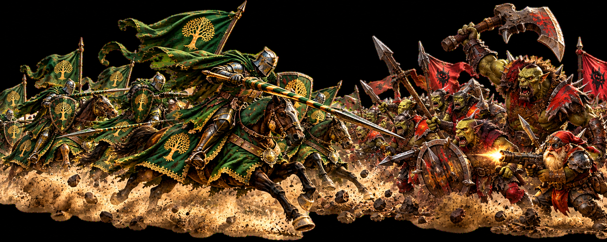

Battle of Asteria
Battle of Asteria combines individual progression with alliance teamwork. What you accomplish on your own helps unlock the challenges that Crimson Oak can fight together.
Why This Event Matters
Battle of Asteria is an important source of Otherworld Crystals. These can be spent in the Otherworld Shop, where you can buy Affinity Gifts for your Immortals. If you have been wondering where to get the gifts needed to increase Immortal Affinity, this is one of the answers: participate in Battle of Asteria.
Stage 1 — Individual Challenge
The event begins with the Individual Challenge. There are six difficulties, each containing 30 levels. Work through the Shadow Rogue challenges as far as your marches can take you.
Your individual progress matters to more than just your own rewards. Enough alliance members must complete the required Individual Challenge before the corresponding Alliance Challenge difficulty becomes available.
Do what you can, even if you cannot clear everything yet. Every member who progresses helps Crimson Oak move toward the alliance stage.
Stage 2 — Alliance Challenge
Once enough members have completed the required individual difficulty, the corresponding Alliance Challenge can be opened by alliance leadership.
The Alliance Challenge contains six difficulties with six boss stages. This is where the event becomes a coordinated alliance effort as members attack the Deceit Vanquisher together.
Do not rush to kill the boss. Players who participate in the fight can earn rewards when the boss is defeated, so give alliance members time to attack before the strongest marches finish it. When needed, use a very small march to tag the boss without taking away everyone else's opportunity.
Rewards
Battle of Asteria rewards progression materials including Otherworld Crystals. The crystals are especially valuable because they connect the event directly to the Otherworld Shop and your Immortal Affinity development.
Affinity Gifts purchased from the shop can be given to Immortals to increase their Affinity, opening further progression through the Affinity and Insignia systems.
Crimson Oak Advice
Complete as much of the Individual Challenge as you can. Your progress helps unlock better Alliance Challenges for everyone.
When the Alliance Challenge begins, follow the alliance call. Make sure members have an opportunity to participate before a boss is killed. The objective is not simply to defeat the boss as quickly as possible. It is to get as much value from the event as possible for the whole alliance.
Push your Individual Challenge, join the Alliance Challenge, collect Otherworld Crystals and turn them into the Affinity Gifts your Immortals need.